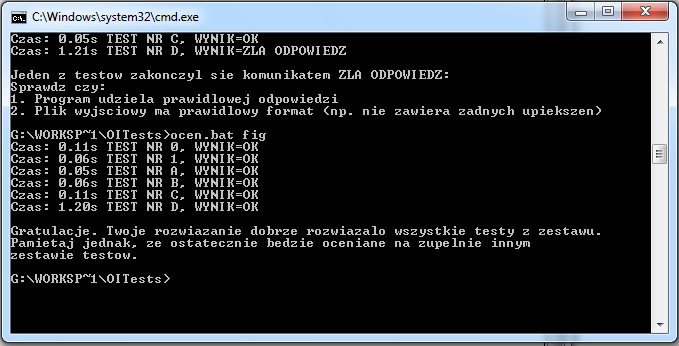
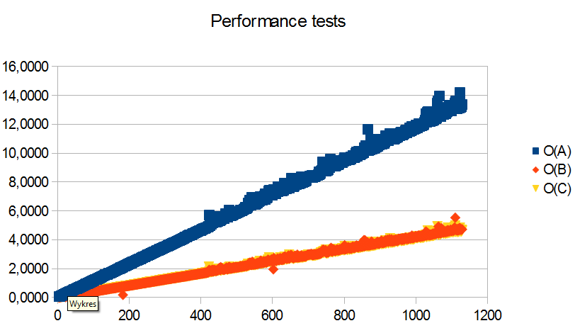

We have a fortress, mines and other metal things. The fortress is big construction build on convex polygon. We know that we don't have mines in the fortress. The remaining area is desert. A new king of Komunistan has a system of satellites. The system prepare a map of the metal objects. We must write apliaction detected a point is mine (outside fortress) or other metal object (on fortress).
We write three algorithms to detect point position. Make performance test. Choose the best one :)
Detect by triangles
Detect by elimination areas
Detect by distance
char goA(int n, struct point *p, struct point tP){
if( isOnCircuit(n, p, tP) ){
return ON_CIRCUIT;
}else if( isOnPolygonByTriang(n, p,tP) ){
return ON_POLYGON;
}else{
return NO_ON;
}
}
//...
for(i=1;i<n;++i){
w = pSide(p[i-1], p[i], tP);
if(w!=RIGHT){
if(w==LEFT){
return NO_ON;
}else{
if(isBettwen(p[i-1], p[i], tP)){
return ON_CIRCUIT;
}
return NO_ON;
}
}
}
//...
//...
for(i=1;i<n;++i){
p1.x = p[i-1].x-c.x;
p1.y = p[i-1].y-c.y;
p2.x = p[i].x-c.x;
p2.y = p[i].y-c.y;
char r = _goC_Test(pv, p1, p2);
if(r!=NaN){
return r;
}
}
//...
To test results we use dedicated test data generator. It is special code generated convex polygon, create random testing data and produce *.in *.out files. Produced test are compatible with OI Tester.

We write simple application to test performance of algorithms A, B and C. The application produce test random data. Testing our algorithms with the data and measure time. Output is save to file out.txt
tests = malloc(sizeof(struct point)*l);
int rmax = 2*l;
for(i=0;i<l;i++){
tests[i].x = (rand() % rmax) - l;
tests[i].y = (rand() % rmax) - l;
}
//... A & B
// For C:
cB = clock();
for(i2=0;i2<l;i2++){
for(i3=0;i3<t;i3++){
goC(n, p, tP);
}
}
tC = clock() - cB;
double tsC =(double)tC/(double)CLOCKS_PER_SEC;
printf("%d %f %f %f \n", n, tsA, tsB, tsC);
fprintf(pFile, "%d %f %f %f \n", n, tsA, tsB, tsC);

A algorithm is the slowest. Algorithms B and C have similar complexity.